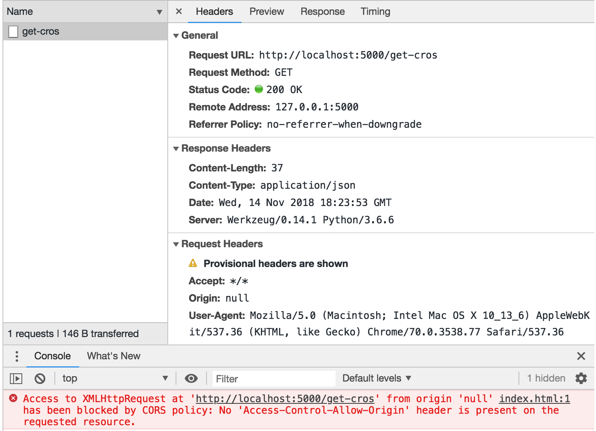
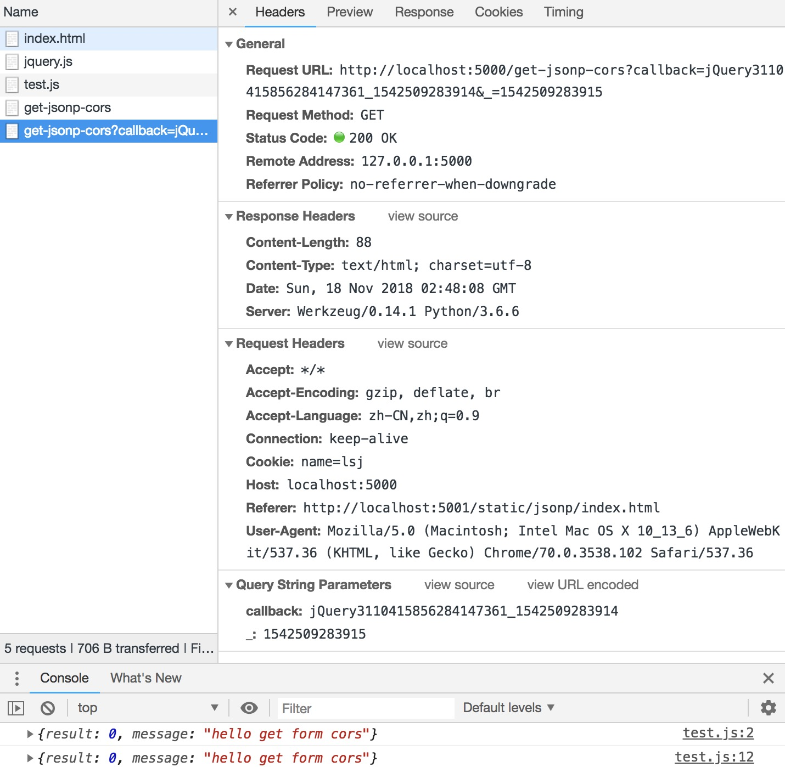

一、跨域问题
1.何为跨域
跨域请求中的域的概念由三部分组成：协议, 域名和端口，当两个域的协议、域名和端口都相同时，即同域，否则为不同域。跨域请求是指浏览器中，域A的资源发起请求获取域B资源。
2.浏览器对跨域的限制
出于安全原因考虑，浏览器对跨域请求做了一些限制: 来自域A的脚本发起了对域B的请求，需要进行跨域校验。当跨域校验成功时，脚本才能正确的获取到对应的数据，需要注意这里存在两种可能的阻止脚本请求域B数据的策略:
- 请求没有发出，脚本无法获取数据。
- 请求已经发出，浏览器拿到响应，但是浏览器禁止脚本拿到响应数据。(主流浏览器使用该策略, 如chrome)
跨域限制并不存在于http请求本身，而是浏览器的跨域校验，并且是只对脚本发起的http请求进行。对于<img>、<script>和<form>等标签而言，是允许不做任何安全校验进行跨域访问的，这也是后面JSONP的跨域解决方案可以得以实施的原因。跨域校验失败的时候，脚本是无法获取到失败原因的，只能打开控制台观察。下图显示了由脚本发起的GET请求的跨域校验失败:

二、CORS解决方案
CORS即跨域共享标准(Cross-Origin Sharing Standard)，Web浏览器通过制定一套协议来提供对CORS的支持。这个协议主要是在请求和响应中添加适当的Headers，这些特殊的Headers标明了哪种HTTP请求的响应允许脚本去获取数据。CORS有两种请求:简单请求和预检请求, 其中预检请求会先发送OPTIONS请求，检查服务器是否对紧接着的数据请求支持。简单请求和预检请求都是由Web浏览器自动根据实际的数据请求进行选择并发起。
1.简单请求
简单请求会直接发送HTTP请求并获得响应，浏览器根据响应的CORS-HEADERS，判断脚本是否有权限获取响应数据。当请求满足以下几个条件时，属于简单请求:
- 使用下列方法之一:
- GET
- HEAD
- POST
- 只使用了CORS安全HEADERS集合:
- Accept
- Accept-Language
- Content-Language
- Content-Type(在一些特殊的取值时为简单请求)
- Content-Type为下列3者之一:
- text/plain
- multipart/form-data
- application/x-www-form-urlencoded
简单请求发出后，一般而言是有响应Body的，但是浏览器是否允许脚本获取Body，就需要观察HTTP-CORS响应字段了。
通常而言，简单请求的必选的HTTP-CORS响应字段为Access-Control-Allow-Origin，若不指定则不支持任何跨域请求。若指定为*，则支持所有的跨域访问。
2.非简单请求
对于不满足简单请求条件的，这里称为非简单请求。由于简单请求实际上是拿到了响应，若响应Body很大会加重网络带宽，因此在脚本发送某些请求的时候，浏览器会先发送一个预检请求，检查是否能够发送实际的请求，若通过检查，则发送实际的请求，否则无法发送实际的请求。预检请求是一个OPTIONS请求，一次非简单请求需要三步:
- 预检请求, 脚本发送HTTP请求, 浏览器自动发送OPTIONS预检请求。
- 实际请求, 验证预检请求的
CORS-HEADERS, 验证通过, 浏览器发送实际请求。 - 获取body, 验证响应的
CORS-HEADERS, 验证通过, 脚本可以获取body。
1).非简单请求条件
不满足简单请求条件的请求，都会触发预检请求，更具体的说，包含以下任一条件，都会出发预检查请求：
- 使用了下面任一方法：
- PUT
- DELETE
- CONNECT
- OPTIONS
- TRACE
- PATCH
- 设置了CORS安全的HEADERS之外的其他HEADERS。CORS安全HEADERS为：
- Accept
- Accept-Language
- Content-Language
- Content-Type
- Content-Type 的值不属于下列之一:
- application/x-www-form-urlencoded
- multipart/form-data
- text/plain
需要明确的是，预检请求是由浏览器自动发出的，js逻辑无需关心，并在浏览器接收到预检请求的响应后，浏览器将会判断是否允许发送实际的请求。注意，实际的请求的响应中，也需要有明确对Access-Control-Allow-Origin的支持。
2).重定向问题
对于预检请求的重定向响应，不同的浏览器处理方式不同，但是绝大多数浏览器不支持针对于预检请求的重定向。如果一个预检请求发生了重定向，浏览器将报告错误。
3.跨域请求HEADERS
跨域请求的headers。这些字段无须手动设置，使用脚本发起跨域请求时，浏览器会自动设置。若对这些headers手动设置，浏览器将会拒绝，如报错：1
Refused to set unsafe header "Access-Control-Request-Method"
1).Origin
origin参数的值为源站URI中的协议://域名:端口，如https://plat.tgp.qq.com。需要注意，无论是否为跨域请求，该参数始终会被浏览器发送。1
Origin: <origin>
不支持多个Origin。
2).Access-Control-Request-Method
该header用于预检请求。其作用是在OPTIONS请求中，将实际请求的方法通过该header告诉服务器。1
Access-Control-Request-Method: <method>
实际请求的方法只可能一种，因此不支持请求多个method。
3).Access-Control-Request-Headers
该header用于预检请求。其作用是在OPTIONS请求中，将实际请求方法中携带的header告诉服务器。1
Access-Control-Request-Headers: <field-name>[, <field-name>]*
实际请求中携带的header可能会很多，因此支持请求多个headers，通过逗号分割。需要注意，满足下列任意条件，就是值请求方法中携带了headers:
- 在请求的
headers中添加了非CORS安全HEADER - Content-Type不为下列值之一:
- application/x-www-form-urlencoded
- multipart/form-data
- text/plain
4.CORS-HEADERS
1).Access-Control-Allow-Origin
告知浏览器，哪些域下的资源可以获取该响应。对于不需要携带cookie的请求，服务器可以指定该字段的值为通配符，表示允许来自所有域的请求。1
Access-Control-Allow-Origin: <origin>
2).Access-Control-Expose-Headers
脚本只能从CORS响应中拿取少数的headers，包括:
- Cache-Control
- Content-Language
- Content-Type
- Expires
- Last-Modified
- Pragma
若脚本需要访问其他的headers，需要服务器的准许，而Access-Control-Expose-Headers字段就是用服务器用于声明哪些headers可以让脚本进行读取的。
3).Access-Control-Max-Age
脚本发一个非简单请求会首先发送预检请求，若每次请求都发送一次预检请求，则太浪费带宽。每次预检成功，结果都会缓存一段时间。1
Access-Control-Max-Age: <delta-seconds>
delta-seconds 参数表示预检请求的结果在多少秒内有效。若没有显示的设置，则浏览器自身维护了一个默认值，不同的浏览器的默认值设置或许会有不同，通常不会很长。
4).Access-Control-Allow-Credentials
该header用于控制跨域请求中cookie的行为。默认情况下，cookies是不会包含在跨域请求中的，除非通过Access-Control-Allow-Credentials:true明确表示了服务器接收跨域请求的cookie。当设置为true时，不允许设置Origin:*,而是将该header设置为一个确定型的Domain，否则浏览器的该跨域请求会报错。
服务器放通过Access-Control-Allow-Credentials:true允许接收cookie后，还需要配置Ajax的withCredentials属性，这里给出jquery的ajax中该属性的配置:1
2
3
4
5
6
7$.ajax({
...
xhrFields: {
withCredentials: true
},
...
});
- 若配置了
Access-Control-Allow-Credentials:true，而没有配置withCredentials: true，则请求中仍然不会包含cookie。 - 若配置了
withCredentials: true，而没有配置Access-Control-Allow-Credentials:true，则请求会报错。
5).Access-Control-Allow-Methods
用于预检请求的响应。其指明了实际请求所允许使用的HTTP方法。1
Access-Control-Allow-Methods: <method>[, <method>]*
6).Access-Control-Allow-Headers
用于预检请求的响应。其指明了实际请求中允许携带的headers。1
Access-Control-Allow-Headers: <field-name>[, <field-name>]*
三、JSONP方案
和CORS方案不同，JSONP限制较多，例如JSONP方案仅仅支持GET请求，也很难对headers进行控制。JSONP方案主要是用于较老版本的浏览器，这些浏览器并不兼容CORS方案。
1.原理
JSONP原理很简单，<img>和<script>标签发起的跨域请求不会受到浏览器安全机制的检查，因此可以通过<script>标签发起跨域请求，获得一个Javacript脚本的响应。1
2
3
4
5
6
7
8
9
<html>
<head>
...
<script src="<domain>/<source>">
...
</head>
....
</html>
需要注意，这里获得到的资源是Javascript脚本，并不是json或xml等资源，为了获得具体的数据资源，返回的Javascript脚本需要具备特定的格式:1
2// 返回Javascript脚本资源的格式
callback(<source>);
返回的Javascript脚本是一个函数，并且会自动调用脚本中的function callback(result)的脚本函数，在函数中将会取得具体的数据资源。
2.动态回调函数
JSONP的响应的回调函数名是由服务器决定的，为了将回调函数的选择权交给WEB端，需要在JSONP请求中加入callback参数(参数名可以变更)，该参数告知服务器JSONP响应在WEB端的回调函数。1
<script src="<domain>/get-jsonp-cors?callback=jsonp_callback_name">
在服务器中，需要将该callback参数的指出来，用于包装资源:1
2
3
4
5
6
7
def get_jsonp_cors():
# 提取WEB端回调函数的名称
jsoncallback = request.args.get("callback", "jsonp_callback")
# 用js脚本包装资源
resp = "%s(%s)" % (jsoncallback, source)
return resp
3.动态JSONP请求
上述直接写死<script>的方式并不方便动态扩展，可以采用对DOM树修改的方式，动态的引入<script>以发出请求。
4.jQuery的JSONP
jQuery将上述提到的动态回调函数和动态JSONP请求问题都进行了较好的封装，可以直接使用:1
2
3
4
5
6
7
8
9
10$.ajax({
url: '<domain>/<source>',
dataType: "jsonp",
// 请求中告知服务器用于接收jsonp回调的函数的参数名
jsonp: "callback",
success: function (result) {
console.log(data);
// result中是跨域的响应
}
})
下图是一个JSONP请求，JSONP回调函数(callback参数的值)是一个jquery生成的随机函数名, _参数相当于是请求的标识，该标识初始为jQuery载入时间戳(us)，以后每次请求递增1。

四、实际场景
这里简单的设计了Flask的装饰器和Nginx的配置，在对后台业务代码无侵入的条件下，完成服务器对跨域请求的支持。由于JSONP只是为老版本的浏览器提供跨域解决方案，并只支持GET请求，不够灵活，因此不给出JSONP的后台支持方案。
1.Flask跨域方案
通过装饰器，可以对Flask后台代码进行很方便的跨域功能扩充，这里仅仅给出一个示例，主要是为了说明为了支持跨域，服务器端该如何设置。除了采用装饰器的方式，也可以采用hook function的方案，该方案主要是需要在后台初始化时配置好跨域行为。
1).业务代码
1 | # -*- coding:utf-8 -*- |
2).装饰器
下面只给出一个示例，仅限于对特定的CORS响应字段的支持。这个装饰器对简单和非简单请求均适用。1
2
3
4
5
6
7
8
9
10
11
12
13
14
15
16
17
18
19
20
21
22
23
24
25
26
27
28
29
30
31
32
33
34
35
36
37
38
39
40
41
42
43
44
45
46# -*- coding:utf-8 -*-
'''
cors.py
'''
from flask import request, make_response
import functools
__cors_headers_allow_origin__ = "Access-Control-Allow-Origin"
__cors_headers_allow_headers__ = "Access-Control-Allow-Headers"
__cors_headers_allow_methods__ = "Access-Control-Allow-Methods"
__cors_headers_expose_headers__ = "Access-Control-Expose-Headers"
__cors_headers_max_age__ = "Access-Control-Max-Age"
__cors_headers_allow_cred__ = "Access-Control-Allow-Credentials"
def __set_resp_header__(response, header, value):
if value is not None:
response.headers[header] = value
def allower(*,
allow_origin = None,
allow_headers = None,
allow_methods = None,
expose_headers = None,
options_max_age = None,
allow_cred = None):
def deractor(f):
def inner(*ks, **kws):
if request.method == "OPTIONS":
resp = make_response()
__set_resp_header__(resp, __cors_headers_allow_origin__, allow_origin)
__set_resp_header__(resp, __cors_headers_allow_headers__, allow_headers)
__set_resp_header__(resp, __cors_headers_allow_methods__, allow_methods)
__set_resp_header__(resp, __cors_headers_expose_headers__, expose_headers)
__set_resp_header__(resp, __cors_headers_max_age__, options_max_age)
__set_resp_header__(resp, __cors_headers_allow_cred__, allow_cred)
return resp
resp = f(*ks, **kws)
if isinstance(resp, str):
resp = make_response(rv)
__set_resp_header__(resp, __cors_headers_allow_origin__, allow_origin)
__set_resp_header__(resp, __cors_headers_allow_cred__, allow_cred)
return resp
return inner
return deractor
若采用Flask作为Web后台框架，更加简便的是可以使用Flask-Cors插件。
2.Nginx跨域方案
Nginx对跨域问题一般采用CORS提供支持。所有的请求都会首先到Nginx，Nginx对请求进行判断，并在响应中添加合适的cors-headers，整体流程如下图所示:1
2
3
4
5
6
7
8
9
10
11
12
13
14
15
16
17 BROWSER NGINX SERVER
|-----------| |-----------------| |-----------|
| | | | | |
| |-----GET-----|--->PROXY PASS---|------>| |
| | | | | |
| |<------------|<--ADD HEADERS<--|-------| |
| | | | | |
| | | | | |
| |---OPTIONS---|-------| | | |
| | | | | | |
| | | \|/ | | |
| |<------------|<--ADD HEADER | | |
| | | | | |
| |----POST-----|--->PROXY PASS---|------>| |
| | | | | |
| |<------------|<--ADD HEADERS<--|-------| |
|___________| |_________________| |___________|
可简述为如下:
- GET请求通过NGINX直接路由给后端服务器，后端服务器的响应通过NGINX返回给浏览器前，将会在响应中添加CORS响应头。
- 发出的OPTIONS请求被NGINX直接消化，添加CORS响应头返回给浏览器, 实际的请求将会(如图中最下面的POST请求)同样会路由给后端服务器处理，再通过NGINX添加CORS响应头返回给浏览器。
通用配置如下所示:1
2
3
4
5
6
7
8
9
10
11
12
13
14
15
16
17server {
...
location /ngx-get-cors {
proxy_pass ...
add_header <http-cors-header> <value>;
}
location /ngx-post-cors {
if ($request_method = 'OPTIONS') {
add_header <http-cors-header> <value>;
return 200;
}
add_header <http-cors-header> <value>;
proxy_pass http://localhost:4001;
}
}
通过ngx_http_map_module，也可以提供一些简单的请求判断，例如提供允许某些Origin(这里是允许http://www.qq.com和http://www.baidu.com访问)进行访问:1
2
3
4
5
6
7
8
9
10
11
12
13
14
15
16
17
18
19
20
21# 白名单
map $http_origin $allow_origin {
default "";
~[http|https]://www.qq.com $http_origin;
~[http|https]://www.baidu.com $http_origin;
}
# 路由
...
location /ngx-post-cors {
if ($request_method = 'OPTIONS') {
add_header <http-cors-header> <value>;
add_header Access-Control-Allow-Origin "$allow_origin";
return 200;
}
add_header <http-cors-header> <value>;
add_header Access-Control-Allow-Origin "$allow_origin";
proxy_pass http://localhost:4001;
}
...
前述的Python装饰器方案虽然对代码入侵相当少，但还是需要对代码进行修改和重启。通过Nginx反向代理就可以做到对业务代码零侵入，并且性能较好。